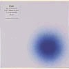

strange music page
japanese strange music * * * trattoria
#trattoria関連.....というよりコーネリアスと嶺川とカヒミ。
カジヒデキとかはあんまり好きじゃないので。
|
- FLIPPER'S GUITAR
- cornelius
- 嶺川貴子
- Yoshie
- Kahimi Karie
- v.a.
|
- いとこの来る日曜日 (hello)
- coffee-milk crazy
- 奇妙なロリポップ (exotic lollipop)
- friends again
- camera! camera! camera! (gutiar pop version)
- summer beauty 1990
- 南へ急ごう (southbound excursion)
- 恋とマシンガン (young, alive, in love; live)
- love train
- クールなスパイでぶっとばせ (cool spy on a hot car; live)
- slide
- groove tube part 2
- love and dreams are back
- cloudy (is my sunny mood)
- big bad disco (smaller)
- 世界塔よ永遠に (the world tower)
- 小沢健二
- 小山田圭吾
- Gotoh Hiroyuki (ragtime piano on 1.)
- 渡辺等 (bass on 6.7.14.)
- 平ヶ倉良枝 (drums,percussions on 4.6.7.8.9.10.13.14.)
- 福原まり (keyboards on 4.6.7.)
- 金子飛鳥 (violin on 4.14.)
- Mecken (bass on 9.12.13.)
- 沖山優司 (bass on 16.)
- 佐々木麻美子 (duet vocals on 4.)(backing vocals on 6.)
- 小林靖弘 (accordion on 11.)
- 仙波清彦 (percussions on 3.)
- 小川美潮 (baacking voals on 12.)
- 久米大作 (piano on 12.)
- Gamou (sax on 10.)
- Nagoya Kimiyoshi (trumpet on 10.)
POLYSTAR/trattoria: PSCR-1042 (1991.12.21)
- Friends Again
- Happy Like a Honeybee (ピクニックには早すぎる)
- Young, Alive, in Love (恋とマシンガン)
- Haircut 100 (バスルームで髪を切る100の方法)
- Camera! Camera! Camera!
- Love Train
- Slide
- Groove Tube
- Blue Shinin' Quick Star
- Dolphin Song
- Cloudy (is my sunny mood)
- Love and Dreams are back (ラヴ・アンド・ドリームふたたび)
- 小沢健二
- 小山田圭吾
- 佐々木麻美子 (duet vocals on 1.)
- 平ヶ倉良枝 (drums,percussions on 1.3.11.12.)
- 福原まり (piano,keyboards on 1.3.)
- 金子飛鳥 (violin on 1.11.)
- 小林靖宏 (accordion on 1.7.12.)
- 矢口博康 (sax on 3.4.)
- 北原雅彦 (trombone on 3.4.)
- 中原信雄 (bass on 4.)
- Ohuchi Mikiko (backing vocals on 3.4.)
- David Ruffy (drums on 5.)
- Segs (bass on 5.)
- Folker Janssen (organ on 5.)
- れいち (drums on 6.)
- Mecken (bass on 6.7.12.)
- 久米大作 (piano on 8.)
- 小川美潮 (backing vocals on 8.)
- バカボン鈴木 (bass on 9.10.)
- 朝本浩文 (rhodes piano on 10.)
- 渡辺等 (bass on 11.)
POLYSTAR: PSCR-5282 (1995.5.25)
#コーネリアスの1枚目、フリッパーズギターの雰囲気をとってもとっても残しています。ポップですし悪い曲なんて無いんですけど中途半端な感じです。この後のアルバムの事考えると、なんだか妙にコンパクトにまとまっちゃった感じもします。
でも2曲目ベース(Mecken)メチャメチャ格好良いです、7曲目の飛鳥ストリングスもよいです。
- THE SUN IS MY ENEMY (太陽は僕の敵)
- (YOU CAN'T ALWAYS GET) WHAT YOU WANT
- SILENT SNOW STREAM
- PERFECT RAINBOW
- BAD MOON RISING
- CANNABIS
- RAISE YOUR HAND TOGETHER
- THE BACK DOOR TO HEAVEN
- THEME FROM FIRST QUESTION AWARD
- THE LOVE PARADE
- MOON LIGHT STORY
all songs written,arranged,produced by 小山田圭吾
- 小山田圭吾 (guitars,vocals)
- 戸田良枝 (drums,percussions)
- 三島豊明 (synthesizers)
- 河合大輔 (keyboards on 2.4.5.6.9.10.11.)
- 久米大作 (keyboards on 1.3.7.)
- Mecken (bass on 2.5.7.9.)
- 渡辺等 (bass on 4.6.10.11.)
- 金子飛鳥strings (strings on 5.7.10.11.)
- 野宮真貴 (chorus on 10.)
- Asa-chang (percussions on 4.)
- 小林正弘 (trumpet on 3.5.6.8.9.10.11.)
- Otomo Mami (chorus on 4.)
- 荒木敏男 (trumpet on 1.7.)
- 渕野繁男 (sax,flute on 5.6.)
- Takeno Masakuni (sax,flute on 5.6.7.)
- Yoshinaga Hisashi (sax,flute on 6.9.)
- 本多雅人 (sax on 9.)
- 松本治 (trombone on 5.6.8.)
- 八木のぶお (harmonica on 4.)
- Imanari Riki (synthesizer operation)
POLYSTAR/trattoria: PSCR-5080(Trattoria Menu.29) (1994)
#いきなり熱海からはじまるピンクのソフトケースに包まれた宇宙旅行です。Buffalo Daughterに暴力温泉芸者にムッシュなど参加メンバーも色とりどり。
なんだか力余ってみたいな感じもしますが、色々やってやろーという感じが出てきてオモシロクなってきてます。
- 69/96 A SPACE ODYSSEY (宇宙の旅)
〜PRELUDE (IN ATAMI)
- MOON WALK
- BRAND NEW SEASON
- VOLUNTEER APE MAN (DISCO)
- 1969 (CASE OF MONSIEUR KAMAYATSU)
- HOW DO YOU FEEL?
- 1969
- LAST NIGHT IN AFRICA
- 1996
- BLOW MY MIND
- 69/96 GIRL MEETS CASSETTE
- CONCERTO NO.3 FROM FOUR SEASONS (PINK BLOODY SABBATH)
- HEAVY METAL THUNDER
- ROCK/96
- WORLD'S END HUMMING
〜REPRISE (IN HAWAII)
- 小山田圭吾 (guitars,vocals)
- Kitada Maki (bass on 2.3.6.8.13.14.15.)
- 渡辺等 (bass on 3.6.11.)(ukulele on 15.)
- Horie Hirohisa (hammond B-3 on 2.)
- 河合大輔 (wurlitzer on 3.14.)(clavinet on 5.7.)
- ムーグ山本 (turntalbe on 2.3.6.8.9.10.13.)
- 中原昌也 (noise on 2.14.)
- シュガー吉永 (guitars,TB-303 on 4.)
- ムッシュかまやつ (vocals on 5.)
- Yoshie (drums on 6.10.)
- Asa-chang (percussions on 6.11.15.)(drums on 8.10.11.13.14.15.)(trumpet on 15.)
- Bonzow (drums on 8.)
- バカボン鈴木 (bass on 10.)
- Kahimi Karie (vocals on 11.)
- 八木のぶお (harp on 11.13.)
- Pink Sabbath (noiz on 12.14.)
- 金原strings (strings on 12.)
- 三島豊明 (manipulations)
- Imanari Riki (manipulations)
POLYSTAR/trattoria: PSCR-5420(Trattoria menu.69) (1995.11.1)
- MIC CHECK
- HTE MICRO DISNEYCAL WORLD TOUR
- NEW MUSIC MACHINE
- CLASH
- COUNT FIVE OR SIX
- MONKEY
- START FRUITS SURF RIDER
- CHAPTER 8 -Seashore and Horizon-
- FREE FALL
- 2010
- GOD ONLY KNOWS
- THANK YOU FOR THE MUSIC
- FANTASMA
all songs wirtten,arranged,performed,produced by 小山田圭吾
- ムーグ山本 (truntable on 1.10.)
- 平ヶ倉良枝 (drums on 5.7.9.)
- Robert Schneider (bass,vocals on 8.)
- Hilarie Sidney (drums,vocals on 8.)
- Sean O'Hagan (bass,chorus,sample on 12.)
- 金原ストリングス (strings on 2.7.11.)
- Fujiwara Kazumichi (mic check,mic master on 1.7.10.)
- Yano Yuki (theremin on 2.)
- 美島豊明 (manipulations,keyboards)
POLYSTAR: PSCR-9107 (1997.8.6)
Trattoria Menu.133
#500円のシングルを買って、結構良さそうだったんでアルバムも買ってみました。前のアルバムから4年振りくらいになります。
右から左、左から右って位相の動きが面白いです、ほんとにハードディスクに沢山音を溜めて遊んでいる感じです。出てくる音は全然実験的じゃなくて、ポップになっているんですけど。
この近未来的ポップスみたいな雰囲気は4,5年したら風化しちゃうよーな気もするんですけど、今ヘッドホンで聴いてる分にはとても気持ち良いです。
ま、とりあえず
cornelius-sound.comで試聴してみましょう。(2001.10.24)

- BUG (ELECTRIC LAST MINUTE)
- POINT OF VIEW POINT
- SMOKE
- DROP
- ANOTHER VIEW POINT
- TONE TWILIGHT ZONE
- BIRD WATCHING AT INNER FOREST
- I Hate Hate
- Brazil
- FLY
- Nowhere
- 小山田圭吾
- 美島豊明 (recording,programming)
- Takayama Toru (mixing,mastering)
- Kuwabara Mikiko (violin)
- Ueda Ayako (cello)
POLYSTAR: PSCR-6000 (2001.10.24)
Trattoria Menu.241
- Mike Alway's Diary (Japanese Version)
- Mike Alway's Diary
- Get Out Your Lazy Bed
- Shower To Shower
- Kahimi Karie (vocals,chorus)
- 小山田圭吾 (guitars,bass,programming,etc.)
- 戸田良枝 (percussions)
- 大橋伸行 (guitars on 3.)
- カジヒデキ (bass on 3.)
- Sasaki Mari (hammond organ on 3.)
- Arakawa Yasunobu (drums,keyboards on 3.)
- Kurosawa Takahisa (violin on 3.)
- Saitoh Keisuke (alto sax,tenor sax)
CRUE-L RECORDS: CRUKAH-002D (1992)
- Candy Man
- Lolita Go Home
- Porque Te Vas
- Still Be Your Girl
produced by 小山田圭吾 (1.)
produced by 柚木隆一郎 (2.)
produced by Kanda Tomoki (3.4.)
- Kahimi Karie (vocals,chorus)
- 小山田圭吾 (guitars on 1.)
- 戸田良枝 (drums,percussions on 1.)
- 渡辺等 (bass on 1.)
- 三島豊明 (keyboards on 1.)
- Kobayashi Masahiro (trumpet on 1.)
- 柚木隆一郎 (guitars,strings,sound perform on 2.)
- 會田茂一 (guitars,electric sitar on 2.)
- Kitada Maki (bass on 2.)
- Oikawa Hiroshi (percussions on 2.)
- Hokama Masami (trumpet on 2.)
- Sugino Toshiyuki (drums on 3.)
- Ishikawa Tomoyuki (bass on 3.)
- Waka (organ on 3.)
- Yamamoto Hidetake (guitars on 3.)
- Kunimi Tomoko (trumpet on 3.4.)
- Mitsuhashi Toshiya (tenor sax on 3.)
- Tanabe Kenji (sound perform,rhythm programming on 4.)
- 堀江博久 (rhodes piano on 4.)
CRUE-L RECORDS: CRUKAH-003D (1994)
- I am a kitten
- Vogue Bambini
- Giapponese a Roma
- Nikon2
- The poisoners
- Kahimi Karie (vocals)
- Momus (guitars,backing vocals)
- Bertrand Burgalat (bass,piano,flute,organ)
- Gregori Czerkinsky (drums,percussion,welson,rythm box,string ensemble,synthesizers)
CRUE-L RECORDS: CRKAH-004D (1995)
- 〜プロローグ〜まじめに愛して！
- 若草の頃
- 偽りの恋〜愛のL'amour〜
- 〜エピローグ〜まじめに愛して！
POLYSTAR: PSCR-9102 (1995.7.26)
Trattoria.menu62
#嶺川貴子さんのアルバム、エレポップでキュートでカワイイです。音色に特徴があって面白いです。
- I Love
- Summertime Blues
- 風の谷のナウシカ
- Clover
- Moonlight Shadow
- My love
- Drive my car
- Gotta pull myself together
- Circling Times Square
- I Love (instrument)
- Mimi
- Love
- 嶺川貴子 (vocals,keyboards,toy instruments,guitars)
- 徳武弘文 (guitars on 12.)
- 渡辺等 (mandolin,ukulele,bass,percusisons)
- Yoshizawa Eiji (keyboards,manipulation)
- 平ケ倉良枝 (drums on 4.12.)
- Furuta Takashi (drums on 1.10.)
- Kurumatani Koji (guitars on 2.3.5.6.8.)
POLYSTAR: PSCR-5381 (1995.6.25)
#シンセで遊んでるのをそのまんまアルバムにしたような嶺川貴子さんのアルバム、ほとんどクラフトワークなみの音数の少なさです。でも全然難しくなくポップでカワイイです。実験音楽っぽいことでも女の子っぽい感覚が出てて面白いですね。
- METROMUSICA
- SLOW FLOW MOLE
- 新型クラクション
- FABIE (1,2,3 EXERCISE)
- FABIE (1,2,3 BEAT IT)
POLYSTAR: PSCR-5577 (1997)
#嶺川 + BUFFALO DAUGHTERなCDです。
嶺川さんの希薄な個性はBUFFALO DAUGHTERと一緒にやるとごく僅かにしか感じられないみたいです。Fun9とか
CLOUDY CLOUD CALCULATORの方が好きかな。
- SLEEP SONG
- FANTASTIC CAT
- NEVER/MORE
- KLAXON!
- WOOOOOG
- DESSERT SONG
- DESTRON
- POPU UP SQUIRRELS
- 1.666666
- RAINY SONG
- T.T.T (TURNTABLE TENNIS)
- BLACK....WHITE
- MORE POP UP SQUIRRELS
produced by BUFFALO DAUGHTER
all songs arranged by 嶺川貴子,BUFFALO DAUGHTER
- 嶺川貴子 (voice,nord rock,sampler)
- シュガー吉永 (guitars,electric sitar)
- ムーグ山本 (turntables)
- 大野由美子 (mini moog,bass)(theremin on 10.)
- Laura Cromwell (drums)
POLYSTAR: PSCR-5476 (1996.5.25)
#えっと、深夜に友達の家に押しかけて借りてきました。今度ライヴ見に行くのでその予習と言うことで。
これはほとんど嶺川さん一人で作ったアルバムですね。この辺の人達のマニアックな所とポップな所のバランスってとても良いですね。気持良いシンセの浮遊感。
- MICRO MINI COOL
- MILK ROCK
- PHONOBALOON SONG
- CAT HOUSE
- CLOUD CHIPS
- KRAFTPARK (MICRO TRIP EDIT)
- KANGAROO POCKET CALCULATOR
- BLACK FOREST
- INTERNATIONAL VELVET
- CLOUD CUCKOO LAND
- TELSTER
- 嶺川貴子
- 津山篤 (drums on 2.)
- Yoshida Masaaki (synthesizer on 2.)
- 大野由美子 (bass,mini moog,theremin,maracas on 11.)
- ムーグ山本 (turntalbes,bird-call on 11.)
- Aiso Yuko (violin on 8.)
EMPEROR NORTON RECORDS: EMN7010-2
#ちなみに"ザイマー"と読みます、リミックス多いですねこの人も。えっと私の知ってるのはコーネリアスとMarkus Popp(オヴァルな人)と竹村延和さんくらいです。コーネリアスはfantasmaまんまでした、竹村延和さんはオシャレな感じになってて意外、オヴァルはアンビエントな感じ。他も結構ポップでキモチイイです。
でもこーゆーリミックス物は結構楽しいかも、元々嶺川貴子さん自体そう言う要素有りますし。あとジャケのデザインはBuffalo Daughterのムーグ山本さん。
トクタケくん貸してくれてアリガト、今度もう1枚のほうもね。って見てないか。(1999.6.20)
- MILK ROCK remixed by Cornelius
- TELSTAR remixed by Mark Bothwick and Trevor/hollAnd
- BLACK FOREST remixed by Kid Loco
- INTERNATIONAL VELVET remixed by Oval (Markus Popp)
- CLOUD CUCKOO LAND (acoustic demo) by Takako Minekawa
- PHONOBALLOON SONG remixed by Nobukazu Takemura (Childisc)
- 小山田圭吾 (acoustic guitars on 1.)
- 三島豊明 (manupilation n 1.)
- Amy Domingues (cello on 2.)
- Helene Filliers (additional voice on 2.)
POLYSTAR: PSCR-5710 (1998.9.23)
#戸田良枝さん、コーネリアスとかトラットリア系で良くドラムを叩いてる女性。なんだかイタリアンでお洒落な感じのソロ(ミニ)アルバム。でもこの人、はにわとかにも参加してるんですよね、その頃は平ヶ倉良枝って名前でしたけど。
なんだかいかにもって感じで笑っちゃうんですけど、力抜けて聴けてよろしいです。
- Meu mundo e uma bola
- Vou me encontrar com voce
- Boas vindas
- Yoshie (percussions,drums,vocals)
- 小山田圭吾 (viola on 1.)
- 大橋信行 (viola on 1.)
- 渡辺等 (bass on 2.)(contrabass on 3.)
- カジヒデキ (guitars on 1.)
- Itami Masahiro (guitars on 2.3.)
- 小林靖宏 (accordion on 2.3.)
POLYSTAR/trattoria: PSCR-5092(Trattoria menu.34) (1994.3.25)
#これも結構安くゲットしました。Yoshie大活躍って感じのアルバムですけどねー。
何故か戸田誠司が参加してます...人脈よくわかんないけど。
- 沖野俊太郎/THE THRILL IS GONE
- Mick Talbot and Steve White/SOUL KITCHEN
- Salon Music/UNSQUARE DANCE
- The Tomorrow People/SKYSCRAPERS
- 清水弘貴/SATIN DOLL
- Yoshie/TELEFONE
- Marden Hill/WATERMELON MAN
- Mo' Music/INTO SOMETHIN' - MORE MISSION - INTO SOMETHIN'
- 沖野俊太郎 (vocals on 1.)
- Nakanishi Yasuharu (piano on 1.)
- Mick Talbot (keyboards on 2.)
- Steve White (drums on 2.)
- Ernie McKone (bass on 2.)
- Mark Vandergucht (guitars on 2.)
- 吉田仁 (beat box,soundmake on 4.)
- 戸田良枝 (percussions on 4.6.)(drums,glockenspiel on 5.)(vocals on 6.)
- 清水弘貴 (guitars on 5.)
- 小林靖宏 (cavagnolo accordion on 5.)
- Takanashi Michio (double bass on 5.)
- 戸田誠司 (keyboards,computer on 6.)
- 小倉博和 (guitars on 6.)
- 渡辺等 (bass on 6.)
- 小山田圭吾 (guitars,programming on 8.)
- 久米大作 (keyboards on 8.)
- Mecken (bass on 8.)
- Kinjoh Hirofumi (flute on 8.)
- 三島豊明 (synthesizer operation on 8.)
POLYSTART/trattoria: PSCR-1067(Trattoria menu.7)
#稲田堤ディスクユニオン、\600でした。色々聴けてお徳かなーとか、何か気に入るヤツ有るかなーとか。そんな感じで。
色々入ってますけど、なんか昔のトラットリアのコンピより好みなヤツ減ったような気もします。OOIOOとか嶺川貴子とかは既に聴いてるからかも。聴いた事無いので気に入ったのはTomorrow's Worldかな？なんか結構いーかげんな感じだけど。(1999.9.30)
- Trattoria'99/Think About The Future
- citrus/Colo Colo Meets The Stripes
- 嶺川貴子/Milk Rock (Cornelius Mix)
- Seagull Screamig Kiss Her Kiss Her/Count 0 Number 1
- Turn On/Ru Tenone
- Doly Mixture/Never Let It Go
- OOIOO/RingRingLee
- The Pastels/Windy Hill (Cornelius Mix)
- Luminous Orange/Puppy Dog Mail
- Hiromix/cliche
- カジヒデキ/Suddenly, Sibylla
- The Apples In Stereo/Man You Gotta Get Up
- Salon Music/Surf Side Monster
- Indian Rope
- citrus/Ripple In Still Water
- Seagull Screamig Kiss Her Kiss Her/Angel
- Dolly Mixture/My Rainbow Valley
- Tomorrow's World/Leslie Phillips In Santiago
- Cornelius/Lazy
POLYSTAR/trattoria: PSCR-5745/Trattoria menu.174 (1999)